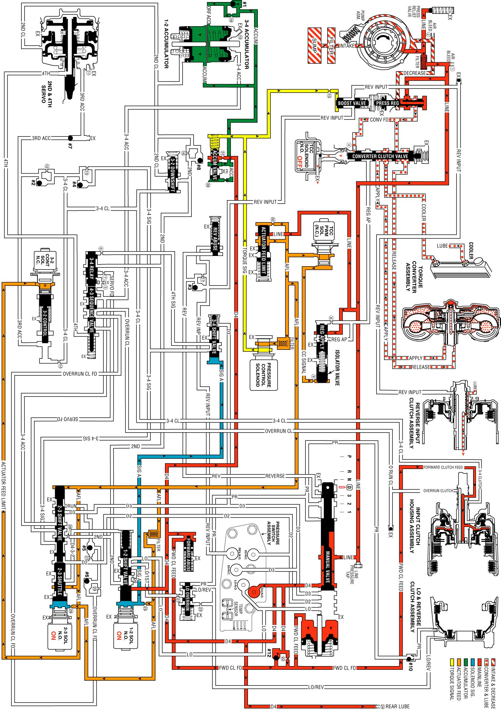

Overdrive Range, First Gear
Overdrive Range, First Gear
When the gear selector lever is moved to the Overdrive position, from the neutral position, the following changes occur to the transmission's hydraulic and electrical systems:
Manual Valve
Line pressure flows through the manual valve and fills the D4 fluid circuit. All other fluid circuits remain empty with the manual valve in the Overdrive position.
Forward Clutch Applies
Forward Clutch Accumulator Checkball (#12)
D4 fluid pressure seats the checkball and is orificed (#22) into the forward clutch feed fluid circuit. This orifice helps control the forward clutch apply rate.
Forward Clutch Accumulator Piston
Forward clutch feed fluid pressure moves the piston against spring force. This action absorbs some of the initial increase of forward clutch feed fluid pressure to cushion the forward clutch apply.
Forward Clutch Abuse Valve
D4 fluid pressure acts on the valve opposite of spring force. At engine speeds greater than idle, D4 fluid pressure increases and moves the valve against spring force (as shown). D4 fluid can then quickly fill the forward clutch feed fluid circuit, thereby bypassing the control of orifice #22 and providing a faster apply of the forward clutch. Otherwise, with increased throttle opening and engine torque, the clutch may slip during apply.
Transmission Fluid Pressure (TFP) Manual Valve Position Switch Assembly
D4 fluid pressure is routed to the TFP manual valve position switch and closes the normally open D4 fluid pressure switch. This signals the PCM that the transmission is operating in Overdrive range.
1-2 Shift Solenoid (SS) Valve
Energized (ON) as in Neutral, the normally open solenoid is closed and blocks signal A fluid from exhausting through the solenoid. This maintains pressure in the signal A fluid circuit.
2-3 Shift Solenoid (SS) Valve
Energized (ON) as in Neutral, the normally open solenoid is closed and blocks signal B fluid from exhausting through the solenoid. This maintains signal B fluid pressure at the solenoid end of the 2-3 shift valve.
2-3 Shift Valve Train
Signal B fluid pressure at the solenoid end of the 2-3 shift valve holds the valve train in the downshifted position against AFL fluid pressure acting on the 2-3 shift valve. In this position, the 2-3 shuttle valve blocks AFL fluid from entering the D432 fluid circuit. The D432 fluid circuit is open to an exhaust port past the valve.
1-2 Shift Valve
Signal A fluid pressure holds the valve in the downshifted position against spring force. In the First gear position, the valve blocks D4 fluid from entering the 2nd fluid circuit.
Accumulator Valve
Biased by torque signal fluid pressure, spring force and orificed accumulator fluid pressure at the end of the valve, the accumulator valve regulates D4 fluid into accumulator fluid pressure. Accumulator fluid is routed to both the 1-2 and 3-4 accumulator assemblies in preparation for the 1-2 and 3-4 upshifts respectively.
Rear Lube
D4 fluid is routed through an orifice cup plug (#24) in the rear of the transmission case to feed the rear lube fluid circuit.
Pressure Control (PC) Solenoid Valve
Remember that the PC solenoid valve continually varies torque signal fluid pressure in relation to throttle position and vehicle operating conditions. This provides a precise control of line pressure.
3-2 Control Solenoid Valve
The PCM keeps the solenoid OFF in First gear and the normally closed solenoid blocks filtered AFL fluid from entering the 3-2 signal fluid circuit.
Torque Converter Clutch PWM Solenoid Valve
In first gear, at approximately 6 mph, the PCM operates the TCC PWM solenoid valve at approximately a 90 percent duty cycle. This opens the AFL fluid circuit, to fill the converter clutch signal fluid circuit through the #9 orifice, and flows to the isolator valve. The CC signal fluid pressure, acting on the isolator valve, will move the regulated apply valve towards the closed position. Regulated line pressure is now routed into the regulated apply circuit, and flows to the closed converter clutch valve, and is blocked from entering the converter clutch apply circuit. Regulated apply fluid is routed through the #8 orifice to the front of the regulated apply valve, and regulates the line pressure entering the regulated apply circuit, in response to the CC signal fluid acting on the isolator valve.
Overdrive Range, First Gear
Overdrive Range, First Gear:
